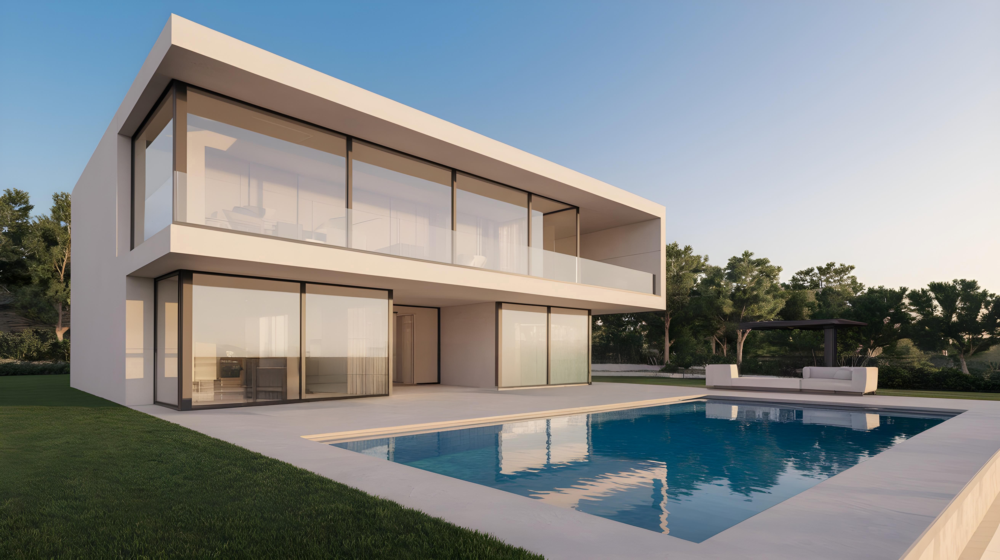

Residência Moderna
Uma casa contemporânea com linhas retas, fachada clean e detalhes em madeira, projetada para oferecer conforto, funcionalidade e elegância. Ideal para famílias que valorizam um estilo de vida prático sem abrir mão da estética.

Casa Horizonte
Residência de design minimalista com linhas retas e amplas superfícies envidraçadas, que integram os ambientes internos à área externa com piscina. O projeto valoriza luz natural, ventilação cruzada e o contato direto com a paisagem, ideal para quem busca sofisticação e conforto em um refúgio contemporâneo.
Casa na floresta
Residência de alto padrão integrada à natureza, com ampla fachada envidraçada, design minimalista e paisagismo orgânico. Um refúgio sofisticado que une arquitetura moderna e harmonia com o ambiente natural.

Casa Harmonia
Uma casa contemporânea com fachada clean, volumes definidos e detalhes em madeira. Projetada para oferecer conforto e praticidade, integra espaços com iluminação natural e ampla conexão com a área externa. Ideal para quem busca um estilo de vida moderno e acolhedor.